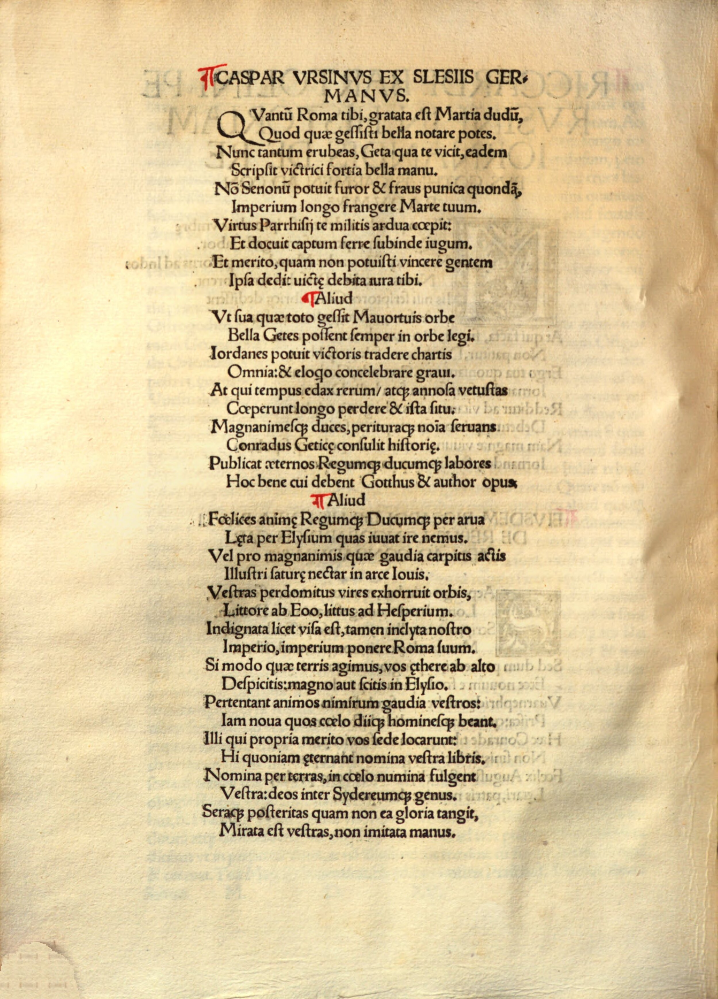

Peutinger 13 (Kaspar Ursinus Vel)
Faksimile

Transkription
Aliud
Felices animae Regumque Ducumque per arva
Laeta per Elysium quas iuvat ire nemus.
Vel pro magnanimis quae gaudia carpitis actis
Illustri saturae nectar in arce Iovis.
Vestras perdomitus vires exhorruit orbis,
Litore ab Eoo, litus ad Hesperium.
Indignata licet visa est, tamen inclita nostro
Imperio, imperium ponere Roma suum.
Si modo quae terris agimus, vos aethere ab alto
Despicitis: magno aut scitis in Elysio.
Pertentant animos nimirum gaudia vestros:
Iam nova quos caelo diique hominesque beant.
Illi qui propria merito vos sede locarunt:
Hi quoniam aeternant nomina vestra libris.
Nomina per terras, in caelo numina fulgent
Vestra: deos inter Sidereumque genus.
Seraque posteritas quam non ea gloria tangit,
Mirata est vestras, non imitata manus.
Übersetzung
Ein weiteres <des Kaspar Ursinus>
Glücklich <sind> die Seelen der Könige und Anführer, denen es gefällt, durch die heiteren Gefilde <und> durch den elysischen Hain zu gehen oder die ihr für eure edlen Taten Freuden genießt, die Köstlichkeit gemischter Früchte, auf der berühmten Burg des Jupiter. Unterworfen erschauderte der Erdkreis vor euren Kräften, von der Küste im Osten bis zur Küste im Westen. Wenn Rom auch entrüstet schien, ihre Herrschaft abzulegen, ist sie dennoch durch unsere Herrschaft berühmt. Wenn ihr nur vom hohen Äther darauf hinabblickt, was wir auf der Erde treiben, oder wenn ihr <es> im großen Elysium wisst. Zweifellos ergreift <dann> Freude eure Gemüter: Schon gibt es neue (sic!) die die Götter und die Menschen mit <der Aufnahme in den> Himmel beschenken. Jene, die euch verdient an einen unvergänglichen Platz gerückt haben: Denn diese verewigen eure Namen in <ihren> Büchern. Auf der Erde strahlen eure Namen, im Himmel eure göttliche Macht: Götter unter dem Sternengeschlecht. Und die spätere Nachwelt, die dieser Ruhm nicht erreicht, hat den eurigen bewundert, die Schar, die ihm nicht gleichkam.
Metadaten
| Titel des Gedichts: | Aliud |
| Autor der Gedichts: | Kaspar Ursinus Vel (Caspar Ursinus Velius) |
| Containerwerk: | Iordanes, Gotus: De rebus Gothorum et Pauli Warnefridi historia Longobardiae libri, Augsburg 1515 |
| Autor des Containerwerks: | Konrad Peutinger (Conradus Peutinger) |
| Gattung des Containerwerks: | Edition, Edition von De rebus Gothorum des Iordanes, Historiographie |
| Erscheinungsjahr: | 1515 |
| Verschlagwortung: | Geschichte, Elysium, Jupiter, Jenseits, Rom, Herrschaft, Himmel, Apotheose, Nachruhm, Buch, Götter, Ruhm, Bewunderung |